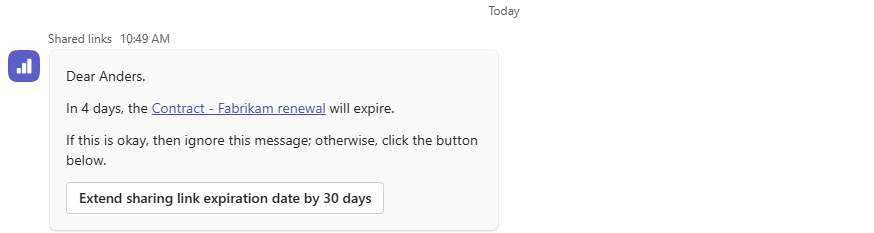
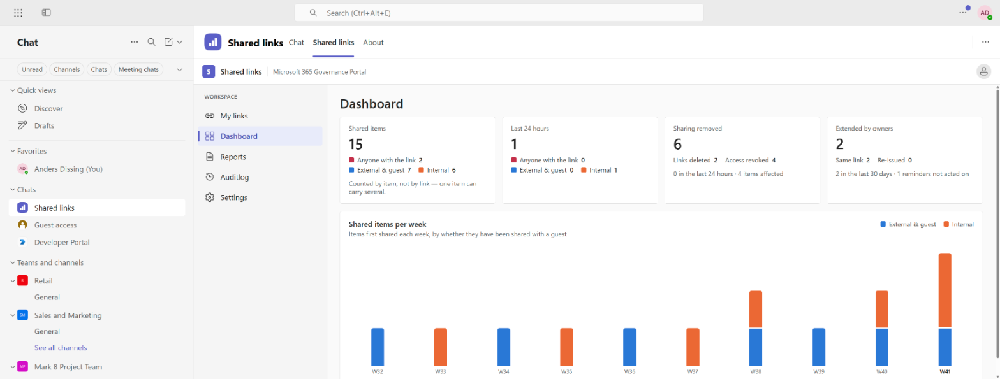

Internal oversharing used to need somebody to go looking.
Now it only needs somebody to ask.
Sharing in Microsoft 365 takes one click. Remembering why, and asking later whether it still stands, takes something Microsoft 365 does not have. The gap opens in two directions, and most organisations have both.
A, B: Gartner survey of 132 IT leaders, June 2025. C: how the platform works.
Inside the company
A folder gets shared with everyone in the organisation, because that was the quickest way to unblock one colleague on one afternoon. The link is still there. So is the folder.
It is rarely one folder. Everyone Except External Users — the group that grants access to every employee you have — is the single largest source of it, and it is the default suggestion in several of SharePoint's own sharing dialogs.
Outside the organisation
An external user arrives the ordinary way: somebody shares a folder. From that moment, nothing records which internal person is responsible for them. The project ends. The person who shared moves on. The access doesn't.
Organisations collaborating externally for a couple of years hold hundreds to thousands of guest accounts — some who signed in and stopped, some who never signed in at all.
The person who granted the access is the only one who knows it should end. Nothing ever asks them.
You should not have to lock sharing down to get control of it.
Every answer to oversharing so far has been restriction. Tighten external sharing. Turn off Anyone links. Make people raise a ticket to collaborate. It works, and it costs you the goodwill of everybody who now has to ask permission to do their job.
This takes the other route. Nothing is locked down, nothing is blocked, and nobody is retrained. The people who made the sharing decisions are simply asked, later, whether they still stand — and their answers become your record.
A named person, one question, a recorded answer.
Megan shares a folder with Lars at Fabrikam. The project ends in May. In November, somebody finally asks.
When somebody shares a folder, or an external account appears, a named internal person becomes answerable for that access.
On a schedule you set, that person gets one question in Teams: is this still needed? It takes one click.
Not just the access change, but the decision — who made it and when. The artefact an auditor asks for and nobody has.
Every link, not only the external ones.
People set expiry dates on links and forget them. When a link expires, work stops — so the instinct is to set long expiries, or none at all.
A link shared with one colleague, with the whole company, or outside it: each was a decision with a reason, and each is watched the same way.
The existing link keeps working. There is nothing to re-send.

Who is answerable for every guest.
Every guest invited from the day you switch it on, in one list, with the thing that exists nowhere else: who is answerable for them, and what they can reach today.
On your schedule, that person is asked whether the guest is still needed. Say yes and the clock resets. Say no and the guest passes to the next person who invited them. Only when nobody is left does an administrator hear about it.
A "no" from one person is not a verdict on the guest. It is one person stepping back.
The two apps, as people use them

"Counted, not listed. These were shared by someone else, so their names are not yours to read."
See it on a guest's page →Access is enforced in the database itself, not by hiding things in the interface. Somebody who opens a guest's page sees the folders they shared. Where that guest can also reach folders shared by colleagues, they get the number — but not the names.
Administrators see the whole tenant. Everybody else sees exactly their own responsibility.
It asks questions. What it does with the answers is yours to set.
The defaults are the cautious ones.
Links
Let people extend an expiry from the card, or keep it read-only and let the reminder stand on its own.
Ships with: extend from the cardGuests
A final "no longer needed" can be recorded for an administrator to act on, or act on the account directly.
Ships with: recording onlyTiming
How long before an expiry people are reminded, how long before a guest is revisited, and what a "still needed" buys.
Your scheduleUntil you turn something on, it holds no permission to do it.
That is not a policy setting. Where the product is set to record rather than act, it is not granted the access that would let it act at all.
The signals about sharing stop being Microsoft's and start being yours.
Everything the product observes is published as a standard event. Your own systems can subscribe to the same signals and build on them without touching anything here.